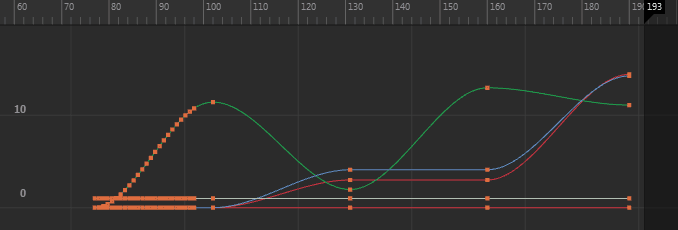
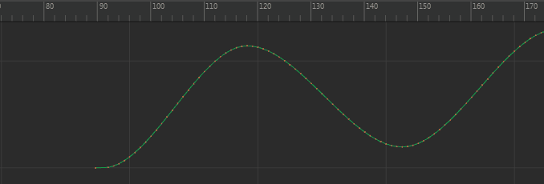

使用在“曲线图编辑器”(Graph Editor)中启用的重定时工具，您可以创建和操纵重定时标记来在时间方向上偏移曲线或曲线分段，或扭曲整个序列，以加快或减慢其发生速度。
注： 您可以在颜色设置(Color Settings)中自定义重定时标记颜色。
有两种主要方法可操纵带重定时标记的曲线：
扭曲曲线
- 选择带要重定时的动画的对象，然后启用“曲线图编辑器”(Graph Editor)中的重定时工具
 。
。
例如，若要同时对整个角色的曲线进行重定时，请选择角色层次。
- 双击以在要扭曲的分段的任一侧创建标记。
当在图表视图中添加多个重定时标记时，在每对标记上会有一条实线表示跨度。
- 按照如下所述拖动标记较粗的中段部分：
- 若要减慢标记之间的动画，请拖动标记使其相隔较远。
- 若要加速两标记之间的动画，请拖动标记使其彼此靠近。
拖动单个标记可缩放跨度内的动画区域。图表视图中的曲线会随着您的拖动进行挤压和拉伸。您还可以在场景视图中查看调整的动画对象计时。注： 在操纵重定时标记前无需选择关键帧。
在时间方向上移动曲线
- 请执行下列任一操作：
- 放置并拖动一个重定时标记。
- 拖动显示在两个标记上的实线跨度。
- 按住 Shift 键并选择想要移动的分段周围的所有标记，然后拖动标记上的实线跨度或选定组中任意标记较厚的中间部分。
